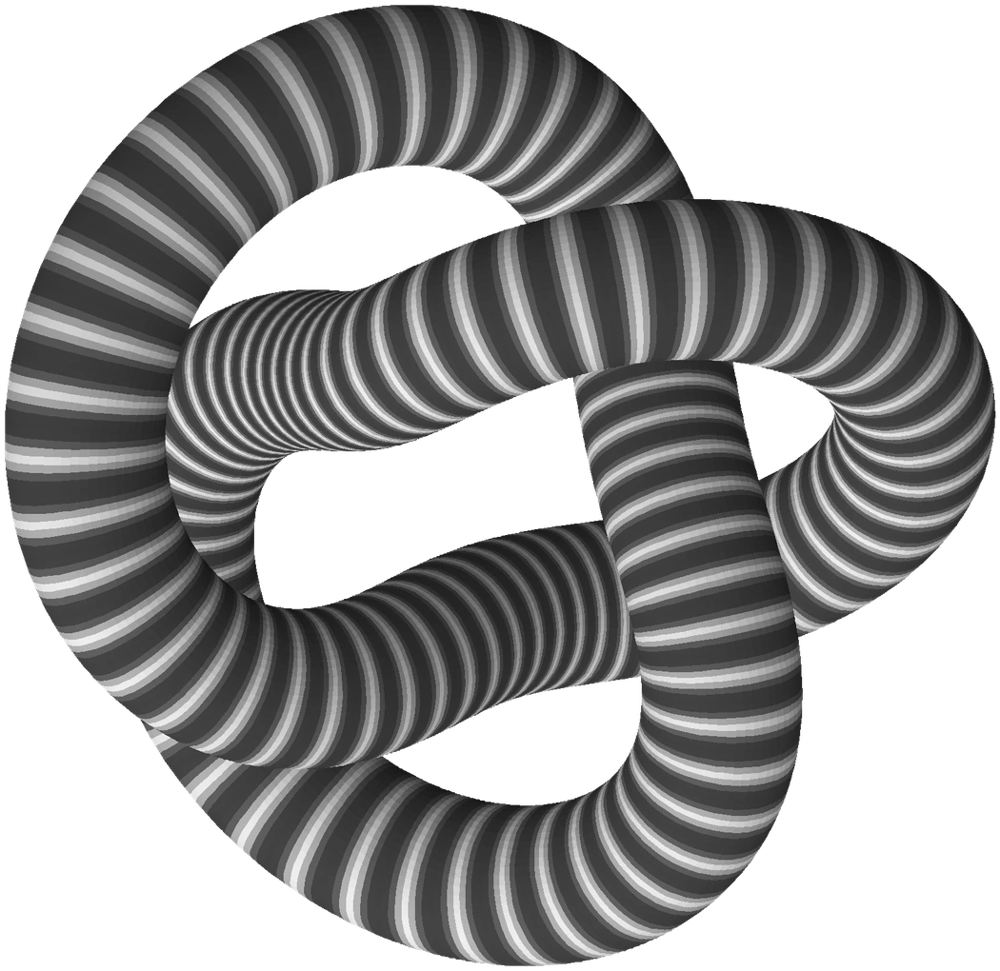

Ciao, sono
Stefano.
Un giorno disegno un menu, un altro costruisco un sito. Con WhereIn progetto tour di cucina in Sicilia.
Cosa posso fare per te?
Trascina verso destra per far avanzare il tubo, verso sinistra per farlo tornare indietro. Da tastiera usa le frecce sinistra e destra.
Presentazione
Cosa ti
Cosa ti
serve?
Grafica e video
Disegno identità, menu e materiali per eventi. Monto video, reel e contenuti per i social.
Portfolio grafico ↗Creative Cuts ↗Siti e strumenti web
Realizzo siti per presentare un’attività e strumenti per chi ci lavora, dagli ordini alle checklist.
A casa di Massi ↗Nord Legnami ↗Cantiere 24 ↗Assistenza digitale
Ti aiuto con dispositivi, account e pratiche digitali. Lavoro a Modica e da remoto.
Scopri i servizi di assistenza ↗Turismo in Sicilia
Per WhereIn Cooking Holidays progetto nuovi tour e supervisiono le attività in stagione.
Chi sono ↗Scrivimi ↗